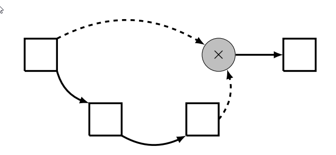
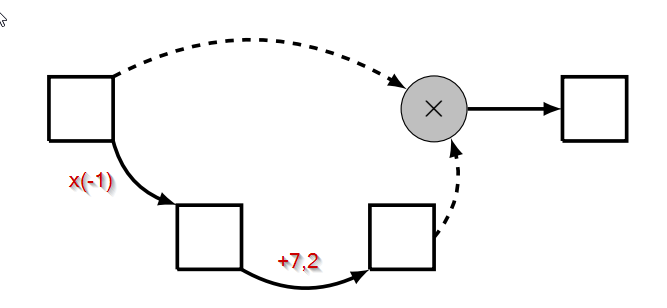
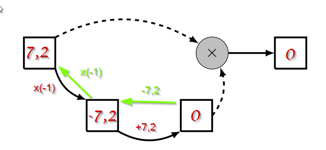

\(C03 - 01\) Vocabulaire et rappels sur les fonctions
Activité : Fonctions, tableaux de valeurs, enchaînements
Malia trouve une étrange machine dans le tiroir de son grand-père.
Quand elle appuie sur les touches 4 et F, la machine affiche \(9\).
Quand elle appuie sur les touches - 2 G, la machine affiche \(6\).
Pour exprimer cela plus rapidement, on dira que :
- l'image de \(4\) par \(f\) est \(9\) ;
- un antécédent de \(6\) par \(g\) est \(-2\) ;
- Chacune des touches F G H K est une fonction.
Elle teste la machine sur plusieurs nombres et note les résultats dans les tableaux suivants :
| Nombre | -4 | -3 | -2 | -1 | 0 | 1 | 2 | 3 | 4 |
|---|---|---|---|---|---|---|---|---|---|
| Image par F | 1 | 2 | 3 | 4 | 5 | 6 | 7 | 8 | 9 |
| Nombre | -4 | -3 | -2 | -1 | 0 | 1 | 2 | 3 | 4 |
|---|---|---|---|---|---|---|---|---|---|
| Image par G | 12 | 9 | 6 | 3 | 0 | -3 | -6 | -9 | -12 |
| Nombre | -4 | -3 | -2 | -1 | 0 | 1 | 2 | 3 | 4 |
|---|---|---|---|---|---|---|---|---|---|
| Image par H | 16 | 9 | 4 | 1 | 0 | 1 | 4 | 9 | 16 |
Notation
Pour des raisons de commodité, on utilisera les nortations suivantes : \(f\) pour F , \(g\) pour G, etc...
Question 1
- Quel est l'image de \(3\) par \(f\) ? de \(2\) par \(h\) ?
- Quel(s) est(sont) l'(les) antécédent(s) de \(-6\) par \(g\) ? de \(1\) par \(h\) ?
- Pour quelle(s) fonction(s) \(9\) est-il l'image de \(-3\) ?
- Laquelle de ces fonctions représente une situation de proportionnalité ?
- L'image de \(3\) par \(f\) est \(8\), autrement dit \(f(3)=8\), et l'image de \(2\) par \(g\) est \(-6\), autrement dit \(g(2) = -6\).
- D'après le tableau, le seul antécédent connu de \(-6\) par \(g\) est \(2\). De même, les seuls antécédents de \(1\) par \(h\) sont \(-1\) et \(1\).
- Il s'agit des fonctions \(g\) et \(h\) : \(g(-3) = h(-3) = 9\)
-
Ce ne peut pas être la fonction \(f\), car l'image de \(0\) est \(5\), ce qui ne représente pas une situation de proportionnalité. Ensuite en extrayant le sous tableau suivant de la fonction \(h\) :
2 3 4 9 On constate que \(2\times 9 \neq 4 \times 3\). Il n'y a pas d'égalité des produits en croix, donc pas de situation de proportionnalité.
Il s'agit donc de la fonction \(g\), avec un coefficient de proportionnalité qui est égal à \(-3\).
Question 2
Malia essaie maintenant d'appuyer sur plusieurs touches.
- Elle essaie la séquence
 . Quelle valeur va être affichée par la machine ?
. Quelle valeur va être affichée par la machine ? - Quelle est l'image par \(h\) de l'image de \(-3\) par \(f\) ?
- Quel(s) est(sont) l'(les) antécédent(s) par \(h\) du(des) antécédent(s) de \(-3\) par \(g\) ?
- On cherche l'image par \(g\) de l'image par \(f\) de \(-2\). Or \(f(-2) = 3\) et \(g(3) = -9\). Donc le nombre cherché est \(-9\).
- \(f(-3) = 2\) et \(h(2) = 4\), donc le nombre cherché est \(4\).
- D'apr-s le tableau de \(g\), \(-3\) ne possède qu'un antécédent, le nombre \(1\). Le nombre \(1\) lui possède deux antécedents par \(h\), les nombres \(-1\) et \(1\). Les nombres cherchés sont donc \(-1\) et \(1\).
Fonctions : définitions, notations et vocabulaire
-
Une fonction est une relation entre deux ensembles de nombres, un ensemble de départ, appelé ensemble de définition et un ensemble d'arrivée.
-
Cette relation possède donc un sens, chaque nombre de l’ensemble de définition possède une et une seule image dans l’ensemble d’arrivée.
-
Un nombre de l’ensemble d’arrivée peut posséder (mais ce n’est pas obligé) un ou plusieurs antécédents dans l’ensemble de départ.
-
Une fonction peut être nomméee par une lettre (\(f\), \(g\), \(h\), \(F\)... - attention, comme en Python, la casse est importante) ou par un nom plus complexe dans des cas particuliers (\(sin\), \(cos\), \(tan\), \(ln\),...).
-
On représente une fonction \(f\) par le schéma suivant :
\[ f : x \longmapsto y \]où \(x\) est un nombre de l'ensemble de définition et \(y\) est le nombre qui lui correspond par \(f\) dans l'ensemble d'arrivée. Cette notation sera lue « \(y\) est l'image de \(x\) par la fonction \(f\) ».
On notera aussi : \(y=f(x)\), qui sera lu « \(y\) est égal à \(f\) de \(x\) »
Exemples
D'après les questions précédentes :
- \(f : 4 \mapsto 9\) ou autrement noté \(f(4) = 9\) ;
- \(g : -2 \mapsto 6\) ou autrement noté \(g(-2) = 6\) ;
- \(h : 2 \mapsto 4\) ou autrement noté \(h(2) = 4\).
Question 3
Parmi les propositions ci-dessous, préciser celles qui sont vraies et celles qui sont fausses :
- \(g(4) = -12\)
- \(h(4) = 2\)
- \(3\) est la solution de \(h(x) = 9\)
- \(3\) est une solution de \(f(x) = 8\)
- Si \(x\) est le nombre de départ, alors \(h(x) = \sqrt{x}\)
-
Le programme de calcul suivant pourrait correspondre à \(h\) :
Prendre un nombre Le mettre au carré Donner le résultat.
- Vrai
- Faux \(h(4) = 16\)
- Faux, il n'est pas la seule solution. On sait que au moins \(-3\) et \(3\) sont solutions de cette équation.
- Vrai
- Faux car en prenant \(4\) comme nombre de départ, on obtient \(16\) et non pas \(\sqrt{4}=2\).
- Vrai
Question 4
Pour chacune des fonctions \(f\), \(g\) et \(h\) :
- Déterminer un programme de calcul pouvant correspondre à la fonction.
- Soit \(x\) le nombre de départ. Déterminer l'image de \(x\) par la fonction. Une telle expression est appelée expression algébrique de la fonction.
- D'après vos réponses précédentes :
- Quelle serait l'image prévisible alors pour \(10\) par \(f\) ?
- Quelle serait l'image prévisible alors pour \(4,3\) par \(g\) ?
- Quelle serait l'image prévisible alors pour \(\sqrt{5}\) par \(h\) ?
- Pour chacune des fonctions
Prendre un nombre
Lui ajouter 5
Donner le résultat
Prendre un nombre
Le multiplier par -3
Donner le résultat
Prendre un nombre
Le mettre au carré
Donner le résultat
-
\(f(x) = x+5\)
\(g(x) = -3x\)
\(h(x) = x^2\)
-
D'après la question précédente :
- \(f(10) = 10 + 5 = 15\)
- \(g(4,3) = -3 \times 4,3 = -12,9\)
- \(h(\sqrt{5}) = (\sqrt{5})^2 = 5\)
Question 5
Malia veut maintenant représenter graphiquement les trois fonctions \(f\), \(g\) et \(h\). Pour cela elle construit le repère suivant, où l'axe des abscisse représente l'ensemble de départ et l'axe des ordonnées représente l'ensemble d'arrivée.
- Elle n'a complété le graphique que pour une seule des fonctions. Laquelle ?
- Compléter de même pour les deux autres.
- Les points représentés sont alignés avec l'origine, il s'agit d'une situation de proportionnalité, donc de la fonction \(g\).

Question 6
La touche K de sa machine ne semble pas fonctionner.
Étant une experte de la recherche sur le web, elle parvient à trouver un manuel d'utilisation de la machine. Dans celui-ci, elle trouve la courbe ci-contre représentant la fonction \(k\).

- Quelle est l'image de \(1\) par \(k\) ? de \(3\) par \(k\) ?
- Compléter un tableau de valeur de la fonction \(k\) pour les nombres entiers allant de \(-4\) à \(4\).
- Proposer une expression algébrique représentant \(k\) sur \([-4 ;4]\).
- Résoudre graphiquement \(k(x) = 0\).
- Résoudre algébriquement \(k(x) = 0\).
- Résoudre graphiquement \(k(x) \leqslant 8\).
- Résoudre algébriquement \(k(x) \leqslant 8\).
- \(k(1) = 2\) et \(k(3) = 8\)
-
Le tableau :
Nombre -4 -3 -2 -1 0 1 2 3 4 Image par \(k\) -13 -10 -7 -4 -1 2 5 8 11 -
\[ f : x \mapsto 3x-1 \]
-
Résoudre graphiquement \(k(x) = 0\), c'est trouver l'abscisse des points d'intersections de la courbe représentative de \(k\) avec l'axe des abscisses
Ici on trouve graphiquement \(\mathscr{S} = \left\lbrace \simeq 0,3 \right\rbrace\).
-
\[ \begin{array}{rcl} k(x) &=& 0\\ 3x-1 &=& 0\\ 3x &=& 1\\ x &=& \dfrac{1}{3} \end{array} \]
D'où \(\mathscr{S} = \left\lbrace \dfrac{1}{3} \right\rbrace\)
-
Résoudre graphiquement \(k(x) \leqslant 8\), c'est trouver les intervalles de l'abscisses sur lesquels la courbe représentative de la fonction \(k\) possède des ordonnées inférieures ou égales à 8.

Ici on trouve graphiquement \(\mathscr{S} = ] -\infty ; 3]\)
-
\[ \begin{array}{rcl} k(x) &\leqslant& 8\\ 3x-1 &\leqslant& 8\\ 3x &\leqslant& 9\\ x &\leqslant& 3 \end{array} \]
D'où \(\mathscr{S} = ] -\infty ; 3]\)
Représentations d'une fonction
Une fonction peut-être représentée de différentes manières :
- par une expression algébrique : on connaît explicitement les opérations nécessaires pour calculer une image. Déterminer un antécédent se fait alors en résolvant une équation.
- par un tableau de valeurs : la connaissance de la fonction n'est que parcellaire. Il est impossible de connaître les images en dehors de celles données dans le tableau.
-
par une représentation graphique : la courbe représentative d'une fonction \(f\) est la courbe d'équation \(y=f(x)\), c'est-à-dire l'ensemble des points du plan dont les coordonnées \((x~;~y)\) vérifient \(y=f(x)\).
Une représentation graphique n'est qu'une vision partielle d'une fonction, et ne permet de donner que des valeurs approchées ou des estimations des images et antécédents par cette fonction.
Remarques
- Un graphique représentant une fonction se trace au crayon à papier ou au criterium, pas au stylo !
- Il faut toujours réfléchir avant de tracer ! Quelle sera mon échelle ? Comment placer mes axes pour avoir tous mes points ?
-
On ne trace que ce dont on est sûr et certain !
En effet, un tableau de valeur ne permet pas de connaître l'allure réeelle de la courbe. Différentes courbes peuvent passer par les mêmes points, comme sur les trois exemples ci-dessous


Question 7 : Enchaînement de fonctions
On admet dans cette question que les fonctions \(f\), \(g\), \(h\) et \(k\) admettent bien comme expression algébrique les expressions données dans les questions précédentes.
-
Malia souhaite connaître la fonction qui est créé par l'appui sur F puis sur H. Elle appelle cette fonction \(u\).
- Compléter un tableau de valeur de \(u\) pour les nombres entiers allant de \(-4\) à \(4\).
- Donner une expression algébrique de cette fonction.
-
Elle souhaite faire de même, mais en changeant l'ordre des touches, donc en appuyant d'abord sur H puis sur F. Elle appelle cette fonction \(v\).
- Compléter un tableau de valeur de \(v\) pour les nombres entiers allant de \(-4\) à \(4\).
- Donner une expression algébrique de cette fonction.
-
L'ordre d'appui sur les touches (c'est-à-dire l'ordre d'enchainement des fonctions ) est-il important ?
-
Questions pour ceux qui ont terminé en avance :
La fonction \(u\) est définie par \(u(x)= h\left(f\left(x\right)\right)\), et la fonction \(v\) par \(v(x)= f\left(h\left(x\right)\right)\). En utilisant la même notation, Déterminer les expressions algébriques des fonctions suivantes :
- \(m_1(x) = g\left(f\left(x\right)\right)\)
- \(m_2(x) = f\left(g\left(x\right)\right)\)
- \(m_3(x)= h\left(g\left(x\right)\right)\)
- \(m_4(x) = g\left(h\left(x\right)\right)\)
- \(m_5(x) = h\left(f\left(g\left(x\right)\right)\right)\)
- \(m_6(x) = h\left(g\left(f\left(x\right)\right)\right)\)
- \(m_7(x) = f\left(g\left(h\left(x\right)\right)\right)\)
- \(m_{8}(x) = f\left(h\left(g\left(x\right)\right)\right)\)
-
-
Le tableau
Nombre -4 -3 -2 -1 0 1 2 3 4 Image par \(u\) 1 4 9 16 25 36 49 64 81
Fonction \(u\) :
- \(u(x) = (x+5)^2\)
-
-
Fonction \(v\) :
-
Le tableau
Nombre -4 -3 -2 -1 0 1 2 3 4 Image par \(u\) 21 14 9 6 5 6 9 14 21 -
\(v(x) = x^2 + 5\)
-
-
Oui l'ordre d'appui est important.
-
Sans explications :
- \(m_1(x) = -3(x+5) = -3x-15\)
- \(m_2(x) = -3x+5\)
- \(m_3(x) = (-3x)^2 = 9x^2\)
- $m_4(x) = -3x^2 $
- \(m_5(x) = (-3x+5)^2 = 9x^2 - 30x +25\)
- \(m_6(x) = (-3x-15)^2 = 9x^2 + 90x +225\)
- \(m_7(x) = -3x^2 +5\)
- \(m_8(x) = (-3x)^2 +5 = 9x^2 + 5\)
Activite : Du programme de calcul à la fonction}
On considère l'algorithme suivant :
Prendre un nombre réel.
Le multiplier par -1.
Ajouter 7,2 au résultat.
Multiplier le dernier résultat par le nombre de départ et donner le résultat final.
Question 1
Ce programme peut-être représenté par le schéma suivant, que vous complèterez par des opérations sur les flèches si possible.


Question 2
Ce programme correspond-il à la définition de fonction donnée plus haut ? Justifiez.
A un nombre de la case de départ, correspond bien un et un seul nombre dans la case d'arrivée. Donc oui ce schéma correspond à la définition d'une fonction.
On notera ce programme de calcul \(f\) a partir de maintenant.
Question 3 : Etude par un tableau de valeur
-
Appliquer le programme de calcul sur tous les nombres entiers compris entre \(−2\) et \(8\), puir ecopier et compléter le tableau ci-dessous :
\(x\) \(-2\) \(-1\) \(0\) \(1\) \(2\) \(3\) \(4\) \(5\) \(6\) \(7\) \(8\) \(f(x)\) -
Cette fonction traduit-elle une situation de proportionnalité ?
- Quelle est l'image de \(2\) ? De \(5\) ?
- Donner un antécédent de \(12,8\).
-
Le tableau :
\(x\) \(-2\) \(-1\) \(0\) \(1\) \(2\) \(3\) \(4\) \(5\) \(6\) \(7\) \(8\) \(f(x)\) -18,4 -8,2 0 6,2 10,4 12,6 12,8 11 7,2 1,4 -6,4 -
Non car il n'y a pas égalité des produits en croix, par exemple avec :
\(4\) \(5\) 12,8 11 \(4 \times 11 \neq 12,8 \times 5\).
-
L'image de \(2\) est \(10,4\), et \(f(5) = 11\).
- Un antécedéent de \(12,8\) est \(4\).
Question 4 : A l'aide du schéma
- Calculer les images de \(2,3\) et \(4,9\). Quelle remarque peut-on faire ?
- Déterminer les antécédents de \(0\).
- Soit \(x\) le nombre de départ. Déterminer en fonction de \(x\) le nombre final obtenu. L'expression obtenue est une expression algébrique de \(f\).
-
\(f(2,3) = 2,3 \times (7,2 - 2,3) = 2,3 \times 4,9 = 11,27\) et \(f(4,9) = 4,9 \times (7,2 - 4,9) = 4,9 \times 2,3 = 11,27\) .
Les deux nombres \(2,3\) et \(4,9\) ont la même image. Ils sont des antécédents de \(11,27\).
-
On sait déjà que \(0\) est un antécédent de \(0\). Mais il est aussi possible d'avoir un antécédent de \(0\) si l'avant dernière case du schéma dans le chemin du bas vaut \(0\) :

On en conclut que \(0\) possède exactement deux antécédents : \(0\) et \(7,2\).
-
\[ f : x \mapsto x(7,2-x) \]
Question 5 : Différentes expressions algébriques
On considère les expressions \(A= x (7,2-x)\) et \(B=12,96 - (x - 3,6)^2\)
- Démontrer que \(A\) et \(B\) sont égales quel que soit le nombre réel \(x\).
- Soit \(C= (x-3,6)^2\)
- Quelles est la plus petite valeur possible pour \(C\) et pour quelle(s) valeur(s) de \(x\) est-elle atteinte ?
- En déduire la plus grande valeur pour le nombre \(B\).
- Quelle est la plus grande valeur possible pour le nombre \(A\) ?\ Pour quelle(s) valeur(s) de \(x\) obtient-on cette plus grande valeur de \(A\) ?\ Conclure pour la fonction \(f\).
-
Pour tout \(x \in \mathbb{R}\), on développe \(A\) et \(B\) :
\[ \begin{array}{rcl} A &=& x (7,2-x)\\ A &=& 7,2x -x^2 \end{array} \]\[ \begin{array}{rcl} B &=& 12,96 - (x - 3,6)^2\\ &=& 12,96 - (x^2 - 7,2x +12,96) \\ &=& 12,96 - x^2 + 7,2x -12,96 \\ B &=& - x^2 + 7,2x \end{array} \]On en conlut que pour tout \(x \in \mathbb{R}\), on a \(A = B\)
-
\(C= (x-3,6)^2\)
-
\(C\) est un carré donc il est positif ou nul. Donc la plus petite valeur possible pour \(C\) est \(0\), et on a :
\[ C=0 \Longleftrightarrow (x-3,6)^2 = 0 \Longleftrightarrow x-3,6 = 0 \Longleftrightarrow x = 3,6 \]La plus petite valeur possible pour \(C\) est donc \(0\) atteinte pour \(x=3,6\).
-
On a :
\[ \begin{array}{rcl} C &\geqslant & 0\\ -C &\leqslant & 0\\ 12,96 - C&\leqslant & 12,96\\ B &\leqslant & 12,96\\ \end{array} \]La plus grande valeur possible pour \(B\) est donc \(12,96\) et elle est atteinte quand \(C\) est égal à \(0\), c'est-à-dire quand \(x\) vaut \(3,6\).
-
Comme \(A =B\) pour tout \(x\) réel, on en conclut que la plus grande valeur possible pour \(A\) est aussi \(12,96\) atteinte pour \(x\) valant \(3,6\).
On dira que \(f\) atteint pour maximum \(12,96\) en \(3,6\).
-
Question 6 : Tracé du graphe
Dans un plan muni d’un repère orthonormé (axes perpendiculaires et même unité sur chaque axe), on place les points d’abscisses \(x\) et d’ordonnées \(f(x)\).
Placer tous les points possibles.